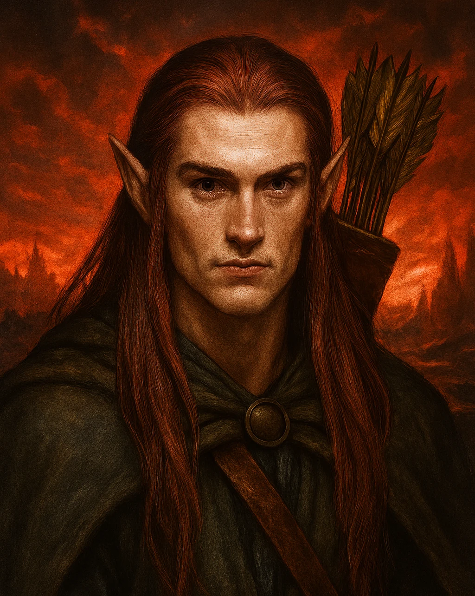

Quick Reactions
Mark a Stress to gain advantage on a reaction roll.

Warrior Elf Wildborne Level 7
A captain who trades in secrets before cannon, and keeps both close.
Mark a Stress to gain advantage on a reaction roll.
During a rest, you can drop into a trance to choose an additional downtime move.
Your movement is naturally silent. You have advantage on rolls to move without being heard.
Spend 3 Hope to gain a +1 bonus to your attack rolls until your next rest.
If an adversary within Melee range attempts to leave that range, make a reaction roll using a trait of your choice against their Difficulty. Choose one effect on a success, or two if you critically succeed:
You ignore burden when equipping weapons. When you deal physical damage, you gain a bonus to your damage roll equal to your level.
Spend a Hope and make an attack against a target. On a success, deal your attack's normal damage and temporarily make the attack's target your Focus. Until this feature ends or you make a different creature your Focus, you gain the following benefits against your Focus:
You gain a pool of dice called Slayer Dice. On a roll with Hope, you can place a d6 on this card instead of gaining a Hope, adding the die to the pool. You can store a number of Slayer Dice equal to your Proficiency. When you make an attack roll or damage roll, you can spend any number of these Slayer Dice, rolling them and adding their result to the roll. At the end of each session, clear any unspent Slayer Dice on this card and gain a Hope per die cleared.
You can wield multiple weapons with dangerous ease. When you succeed on an attack, you can spend a Hope to add one of the damage dice from your secondary weapon to the damage roll. Additionally, once per long rest when you roll your Slayer Dice, reroll any 1s.
You’re an inspirational warrior to all who travel with you. Your party gains access to the Martial Preparation downtime move. To use this move during a rest, describe how you instruct and train with your party. You and each ally who chooses this downtime move gain a d6 Slayer Die. A PC with a Slayer Die can spend it to roll the die and add the result to an attack or damage roll of their choice.
When you make a damage roll, you can mark a Stress to gain a +1 bonus to your Proficiency. Additionally, when you deal Severe damage to an adversary, they must mark a Stress.
When you're traveling to a place you've previously visited or you carry an object that has been at the location before, you can identify the shortest, most direct path to your destination.
When your Focus makes an attack against you, you gain a +2 bonus to your Evasion against the attack.
Before you make an attack roll against your Focus, you can spend a Hope. On a successful attack, you remove a Fear from the GM's Fear pool.
Gain a bonus to your Evasion equal to half your Agility.
You can use a different character trait for an equipped weapon, rather than the trait the weapon calls for.
When you deal damage, you can mark a Stress to use the maximum result of one of your damage dice instead of rolling it.
While you are wearing armor, gain a +2 bonus to your damage thresholds.
Make a Spellcast Roll against a target within Far range. On a success, deal d6+4 magic damage using your Proficiency. Additionally, mark 2 or more Stress to make them permanently Corroded. While a target is Corroded, they gain a -1 penalty to their Difficulty for every 2 Stress you spent. This condition can stack.
When you make a successful attack with a weapon, gain a bonus to your damage roll equal to either your Finesse or Agility.
When you take Severe damage, you can mark a Stress to reduce the severity by one threshold.
When you make a successful attack against a target within Very Close range, you can spend a Hope to use the attack against all other targets within Very Close range. All additional adversaries you succeed against with this ability take half damage.
Emanation - Very Close
When you Help an Ally, they can spend a Hope to add one of your Experiences to their roll alongside your advantage die.
When making a Tag Team Roll, you can roll a d20 as your Hope Die.
When you choose this card, permanently gain two of the following benefits:
Then place this card in your vault permanently.
During a short rest, you can choose a long rest downtime move instead. You can spend a Hope to let an ally do the same.
Handfuls 3 · Bags 4
Agility · Very Far · 3d6+5 phy
Reliable. +1 to attack rolls
Agility · Melee · 3d4+2 phy
Protective. Add the item's Tier to Armor Score
Agility · Melee · 3d10+6 phy
Brutal. When you roll the maximum value on a damage die, roll an additional damage die.
Thresholds 11/27 · Armor Score 5
Impenetrable. Once per short rest, when you would mark your last Hit Point, you can instead mark a Stress.
This item represents enough rations to feed a character for a few days. So long as a character has this item on them when they travel, they do not suffer from the effects of hunger or thirst. If a character does not have this item on their person during a long rest taken as part of a travel narrative, they may not take the clear stress downtime action. Generally speaking, a character does not need to carry multiple uses of this item. Each item represents multiple servings of foodstuff. After a long rest, however, a GM may spend a Fear in order to force a character to make an Instinct Roll with a difficulty based on the terrain. On a failure, the character runs out of rations and must consume this item.
Clear 1d4 HP.
Clear 1d4+1 HP.
As an action, you can splash the contents of this flask onto a creature within very close range. Make an agility attack against a target creature. If the target is a fiend or undead, it takes d12 magic damage, using your proficiency.
You can make a Finesse Roll using this net to trap a small creature. A trapped target can break free with a successful Attack Roll (16).
You gain a +1 bonus to an Experience of your choice. You can only carry one relic.
You can attach this stone to a weapon that doesn’t already have a feature. The weapon gains the following feature.
Brutal: When you roll the maximum value on a damage die, roll an additional damage die.
He Age 55 Faith: Silvanus
Who taught you to fight, and why did they stay behind when you left home?
Somebody defeated you in battle years ago and left you to die. Who was it, and how did they betray you?
What legendary place have you always wanted to visit, and why is it so special?
We knew each other long before this party came together. How?
What mundane task do you usually help me with off the battlefield?
What fear am I helping you overcome?
An unofficial fan site for a private Daggerheart campaign.